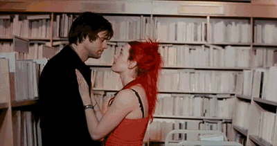

Uno de los núcleos conceptuales más profundos de la película reside en su crítica a la fantasía contemporánea de suprimir el sufrimiento mediante soluciones técnicas instantáneas. Desde una lectura psicoanalítica, Martín Exequiel Jesús Bertea (2022) señala que la clínica Lacuna encarna la intrusión del discurso científico y de mercado en la vida afectiva, ofreciendo un protocolo estandarizado —«para todos igual»— que promete despertar al día siguiente como si nada hubiera ocurrido. Sin embargo, siguiendo los planteamientos de Sigmund Freud en Duelo y melancolía, el duelo por la pérdida de un ser amado no es una patología que deba extirparse quirúrgicamente, sino un trabajo psíquico indispensable que exige tiempo para ejecutarse «pieza por pieza» y permitir que el sujeto elabore la pérdida (Bertea, 2022, p. 19).
Al suprimir el recuerdo sin atravesar el dolor, los personajes no alcanzan la serenidad prometida por el verso de Alexander Pope, sino una forma de desorientación y melancolía sin objeto. Clementine experimenta ataques de pánico y una sensación de vacío incomprensible porque su cuerpo y su afectividad conservan la huella de una ausencia cuyo origen ignora (Greco, 2024). Del mismo modo, Mary queda condenada a repetir exactamente el mismo enamoramiento hacia el doctor Mierzwiak al haber borrado la experiencia dolorosa que le habría permitido aprender de su error (Scudeler, 2024).
A medida que el borrado avanza hacia atrás en la mente de Joel, la cinta plantea una tesis filosófica contundente: somos la suma de nuestras experiencias, incluidas aquellas que nos lastimaron. En su ensayo sobre la película, José Miguel Martínez (2023) vincula la lucha interior de Joel con la tradición literaria de Jorge Luis Borges, recordando que nuestra identidad es un tejido construido por la memoria y que renegar de los recuerdos compartidos equivale a mutilar la propia biografía. Cuando Joel intenta ocultar a Clementine dentro de los recuerdos de su infancia —donde ella adopta el rol protector de una amiga o figura materna frente a las humillaciones infantiles—, la película sugiere que los vínculos amorosos profundos dialogan con nuestras heridas más tempranas (Greco, 2024; Martínez, 2023).

La ensayista Beatrice Scudeler (2024) subraya que la verdadera tragedia del procedimiento de Lacuna no es únicamente olvidar a la otra persona, sino perder la capacidad de crecimiento moral que nace del sufrimiento asumido. Según Scudeler, el filme demuestra que ser vulnerable al dolor es una condición inherente a la dignidad humana: solo cuando los personajes recuperan el conocimiento de cómo se hirieron mutuamente adquieren la madurez necesaria para actuar de manera distinta.
Frente al modelo del romance hollywoodense tradicional —basado en la idealización absoluta y el «vivieron felices para siempre»—, Charlie Kaufman propone una ética del amor adulto y realista. Durante la primera etapa del enamoramiento, Joel y Clementine proyectan en el otro la solución a sus propias carencias: él busca en ella la vitalidad espontánea que le falta, mientras ella advierte explícitamente que no es un concepto ni una fantasía diseñada para rescatarlo de su aburrimiento. Con el paso del tiempo, esas mismas diferencias se convierten en motivo de reproche, fastidio y rutina.
Por ello, la escena final en el pasillo del departamento posee una fuerza emocional tan perdurable. Al escuchar las cintas de Lacuna, ambos quedan despojados de toda idealización romántica: conocen de antemano las críticas más ácidas que se hicieron y saben que la convivencia volverá a traer momentos de tedio y fricción (Scudeler, 2024). Cuando Clementine enumera con franqueza sus defectos y predice que volverá a sentirse atrapada, Joel no le promete un futuro idílico ni libre de conflictos; simplemente acepta la totalidad de lo que ella es con un «Okay» compartido (Martínez, 2023; Scudeler, 2024). Amar, concluye la película, no consiste en hallar a alguien perfecto ni en borrar las cicatrices del pasado, sino en elegir consciente y valientemente caminar junto al otro asumiendo el riesgo de volver a sufrir.